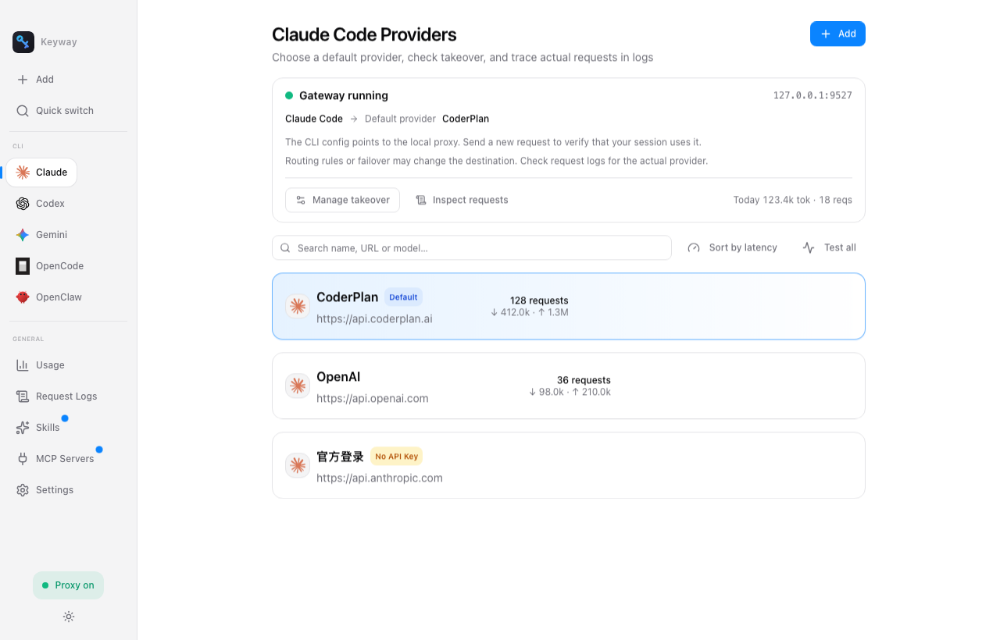
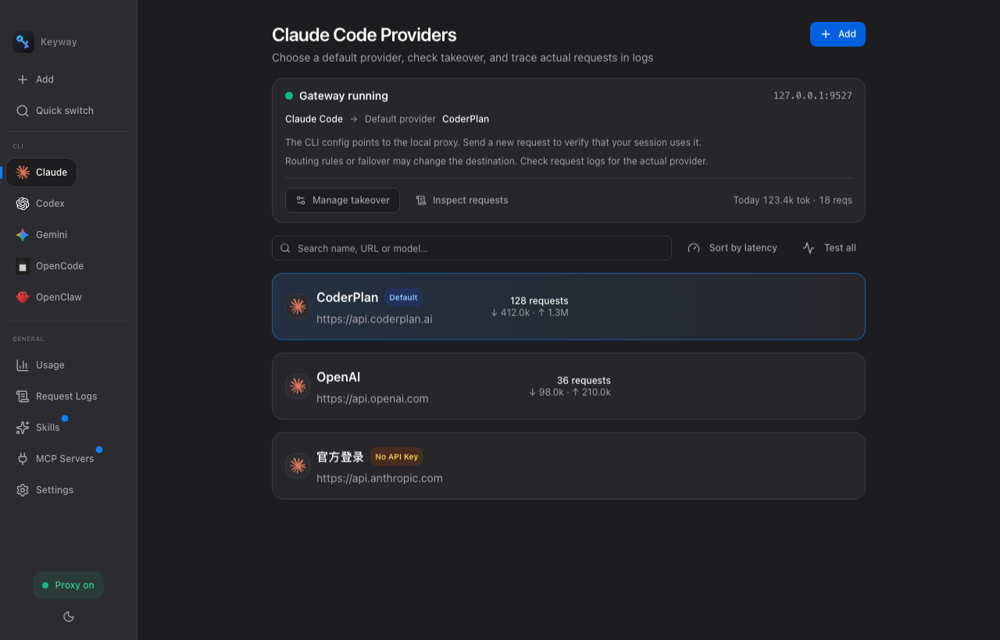

AI CLI 的本地网关。供应商切换、路由与故障转移,一个地方管理;从请求日志看清实际去向。
最新正式版 v0.2.14 · macOS / Windows / Linux

默认供应商、连接状态、实际请求,各有依据。
已经通过代理的会话,切换默认供应商无需重启。后续请求按新配置转发,已发出的请求不会迁移。
API Key 存入本机 SQLCipher 加密数据库,主密钥由系统钥匙串保管。导出的供应商配置不含 API Key。
从请求日志查看供应商、模型、状态码与错误信息。路由或故障转移改变了去向,也不只靠猜。
Local-first · 不是托管中转站
Keyway 把控制面留在本机:不托管你的 API Key,不替你销售模型,也不把默认供应商冒充成实际去向。
先接入本地代理,再切换默认供应商。首次接管 Codex 后需新开一次会话;后续切换无需重开。
从密钥安全到请求观测,Keyway 是 AI CLI 的本地网关。
配置并启用备用供应商链,在可重试的上游失败时尝试下一候选。已开始的流式响应不保证无缝恢复。
让特定模型走特定供应商:如 claude-* 官方、deepseek-* 中转,先预览路径,再按模型名自动分发。
最近 100 条请求逐条可见:实际供应商、模型、上下行 token、状态码与耗时,排障一目了然。
按 CLI、按供应商汇总 token 用量与请求成功率,谁稳定、谁费钱,数据说话。
工作 / 个人 / 测试多套供应商组合一键快照保存、随时切换,互不干扰。
供应商配置一键导出 JSON(不含密钥),换机、分享预设不发愁。可从 5 个支持自动接管的 CLI 配置导入。
API Key 存储于本机 SQLCipher 加密数据库,主密钥由系统钥匙串保管。导出的供应商配置不包含 API Key。
每个供应商一键测试连通性与延迟,切换前心里有数。
三步向导选 CLI、加供应商、一键接管;菜单栏常驻,随时秒切、查看主界面。

Keyway 在本机运行代理(127.0.0.1:9527)。接入代理的 CLI 请求按默认供应商、路由规则与故障转移配置转发;请求日志用于查看实际去向。
API Key 存入 SQLCipher 加密的本地数据库,数据库主密钥由系统钥匙串保管。导出的供应商配置不含 API Key;转发请求时会向所选上游发送认证信息。
Keyway 提供 9 个 CLI 分组来管理供应商,覆盖 Anthropic / OpenAI / Gemini 三种协议。Claude Code、Codex CLI、Gemini CLI、OpenCode、OpenClaw 支持自动接管,其他分组可按 CLI 支持的变量手动接入,供应商可按协议复用。
已通过代理的会话切换默认供应商无需重启,后续请求按新配置转发,已发出的请求不迁移。首次接管 Codex 需新开一次会话;路由规则仍优先生效。
可以。模型路由规则让不同模型走不同供应商;故障转移在上游出错时自动切到备用;多配置档案可整组切换工作 / 个人环境。
在接管管理中点击「还原」,撤销 Keyway 改写的配置字段,保留无关改动。目标字段或自动创建的条目被外部修改时会中止,文件与备份保留;请先检查冲突。
Keyway 完全免费且开源(MIT)。你只需为自己使用的模型供应商付费。
已接入本地代理的 CLI 依赖 Keyway 运行。关闭窗口可驻留托盘,完全退出会停止代理;需要恢复直连时,请先还原配置。代理离线与上游供应商故障是两种不同状态。
* 配置与用量记录保存在本机加密数据库。代理会向选定的模型供应商发送请求内容与认证信息;本地存储不代表离线推理。
** Claude Code、Codex、Gemini CLI、OpenCode、OpenClaw 分别为各自所有者的产品;Keyway 与 Anthropic、OpenAI、Google 无关联。